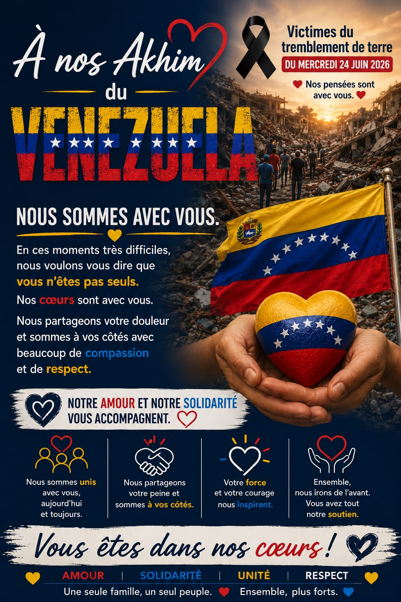

Solidarité · Entraide · Compassion
L'Achaba est l'expression de notre amour fraternel pour tous ceux qui traversent des moments difficiles. Les Membres de La Voie se tiennent les uns aux côtés des autres — et aux côtés de toute âme qui souffre — avec compassion, respect et fidélité au Dabar Yah.
✦ MESSAGE DE SOLIDARITÉ ✦
